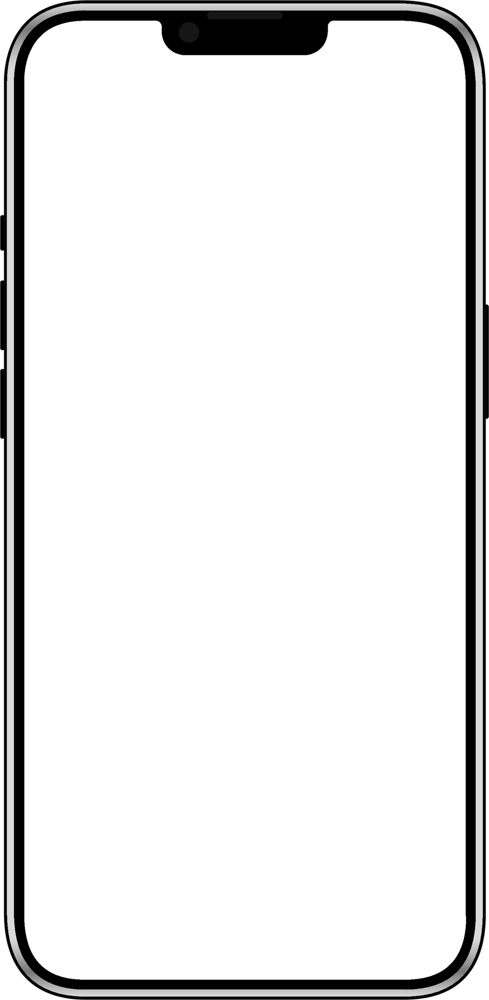
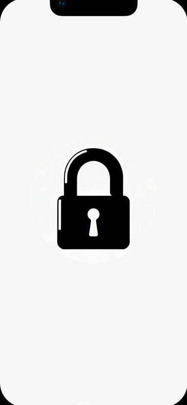
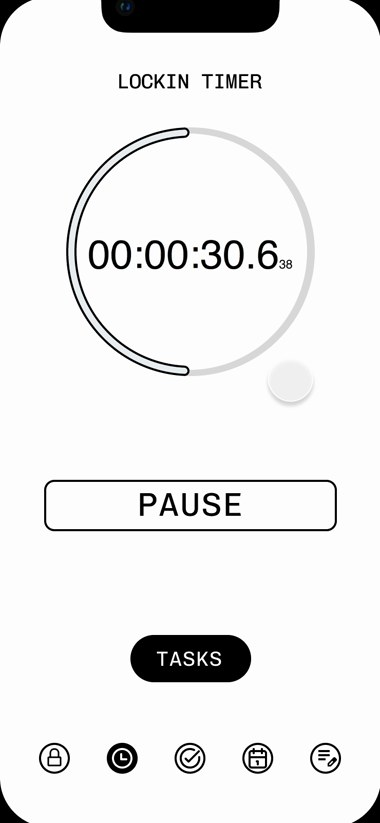
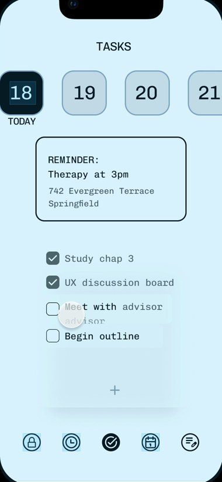
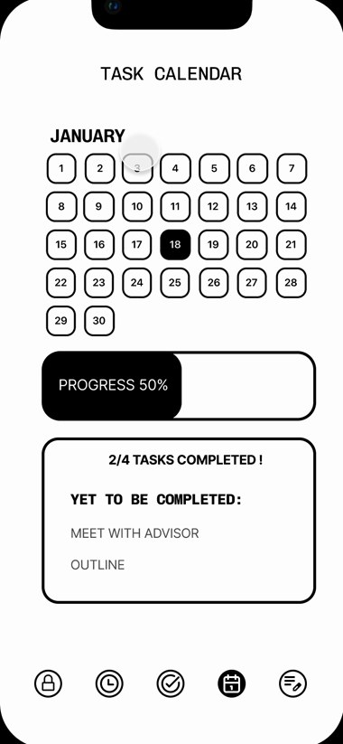
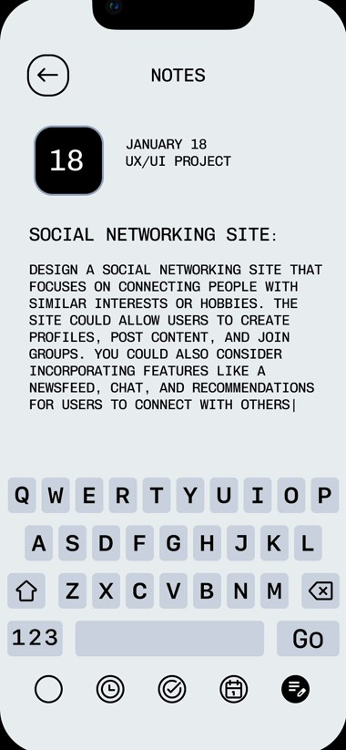

Hold to lock in
The first screen is a single gesture. Press and hold the button and the padlock closes. It’s a small ritual that turns “I should start” into “I’m starting.”

Systems & Interaction · Productivity app · Mobile prototype
Lock In is a productivity app for a younger audience, built around one idea: starting is the hard part, so make it a decision you can feel. I designed the original flow in Figma, then rebuilt it here as a working prototype. Press and hold, scroll, or just poke around.
The first screen is a single gesture. Press and hold the button and the padlock closes. It’s a small ritual that turns “I should start” into “I’m starting.”
The timer counts up with a sweeping ring, and once you’re locked in the whole interface goes black. The other tabs lock too, so leaving takes a deliberate pause.
A week strip, a reminder card and a checklist. Check things off, add your own, or tap the arrow on a task to focus on it and jump to the timer.
Progress is calculated from the same tasks, so checking something off moves the bar. Tap any day to see how it’s going.
Quick notes in a typewriter style, with a custom keyboard so the screen stays one calm thing. Click the keys or type.
LOCKIN
READY WHEN YOU ARE.
LOCKED IN TODAY 00:00:00
LOCKIN TIMER
SESSION 01
TASKS
TASK CALENDAR
JANUARY
YET TO BE COMPLETED:
NOTES
NOTES
JANUARY 18
UX/UI PROJECT

The original Figma flow, screen by screen. The remake keeps the layout and the monospace voice, then adds the lock gesture, focus mode and live data connecting every screen.





Aa
Space Mono for the interface voice. Helvetica Neue for numbers.